Inkscape’s brush, filter,
and paint transform ordinary strokes of a pencil or pen into large swathes
and splashes of color with edging that suggests strokes made by colored
pencils, pens, and even cord glued onto the artwork that, indeed, looks
like coiled cord or rope. The number and style of colors and shapes
possible is limited only by the imagination.
In this tutorial, you’ll learn how to do the following:
How to create water ripples using the Calligraphy tool.
How to create a rope cord element and use it to draw a length of rope.
How to place objects along a path at regular intervals with regular
spacing.
Getting Started
In this tutorial, you will continue applying different styles of paint
brush and drawing pencil to a template file you were working on in the last
tutorial, Tutorial 14, Part A. You will work with the Calligraphy Pen tool
and learn how to create a ripple texture. You will also learn some of the
critical thinking techniques to analyze and then create complex shapes.
Download file Tutorial14B_end.svg
and store it in a convenient location on your computer. Choose File >
Open, and open the Tutorial14B_end.svg file.
Finished poster.
If you like, choose View > Zoom > Zoom Out to make the
finished artwork smaller, adjust the window size, and leave it on your
screen as you work. If you don’t want to leave the image open,
choose File > Close.
To begin working, File > Open file Brushes.svg, which you
were working on in the last tutorial. If file Brushes.svg is not
available, then download file Tutorial14B_start.svg
and store it in a convenient location on your computer. Choose File >
Open to open it.
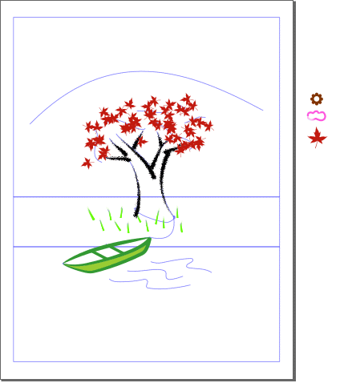
Start file for Tutorial 14, Part B.
Choose File > Save As, name the file Brushes.svg, and
store it where you deem best.
You will be using layers to create your artwork.
Click on the View Layers icon ().
Note that there are already four layers, each containing a specific
component of the artwork.
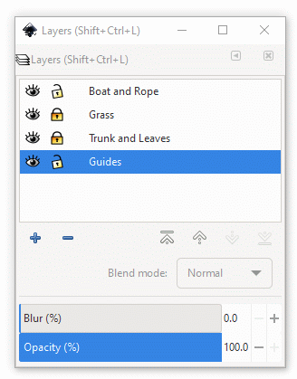
Layers dialog box showing four layers.
Using Calligraphic Brushes
Calligraphic brushes resemble strokes drawn using different types of
calligraphic pen. Pen types and styles include the Dip pen,
Marker, Brush, Wiggly, Splotchy, and
Tracing. The No preset option allows you to create your own
pen style.
You’ll use a Calligraphic pen to draw water ripples in front of the
canoe. You’ll begin by creating a custom brush. You will then choose a
color for the brush strokes you will have drawn.
Click on the Calligraphy Pen tool icon () in the toolbox. The Calligraphy Pen Tool Controls Bar
appears.
Calligraphy Pen Tool Controls Bar.Left half of the Calligraphy Pen Tool Controls
Bar.
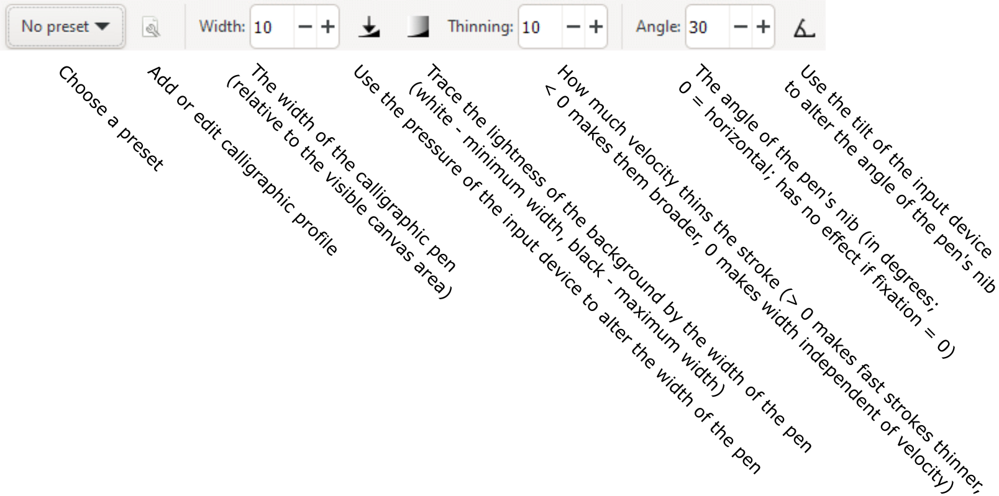
Right half of the Calligraphy Pen Tool Controls
Bar.
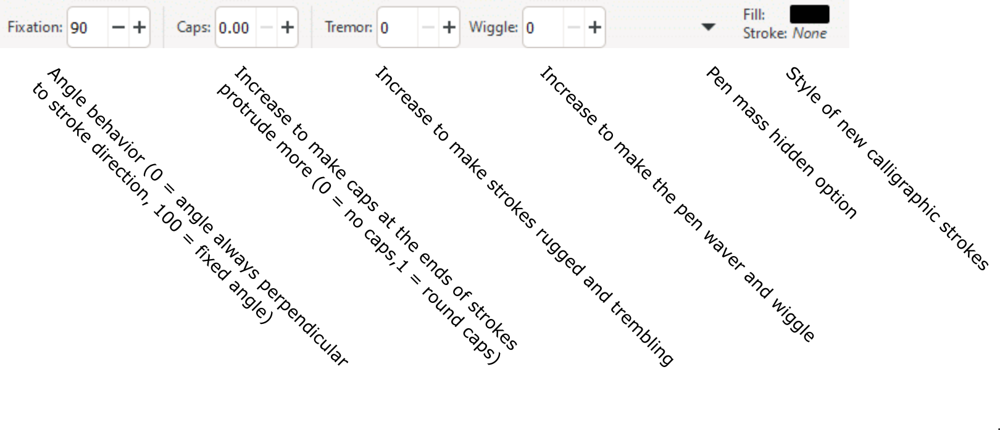
Pen mass controls.
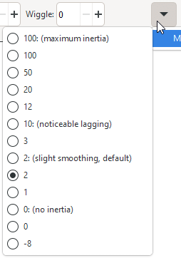
You will make create a new Calligraphic Pen preset option for making
lines and curves that represent ripples. As you draw a curve, the thickness
will vary subtley, which is desirable in this case. The various settings you
make will be saved as a pen preset option.
Set the Width = 8, keep the Thinning at 0, set the
Angle = 45, Fixation = 75, and Caps and Tremor
to 0.
Click on the Down arrow () at the right of the Calligraphic Pen Tool
bar to bring up the Pen mass dialog box. We chose Mass = 4
to make the pen stroke lag behind a little bit in speed compared to the speed
at which you will be drawing to help smoothen the curve.
Click on the Add or edit calligraphic profile icon () at the left end of the Calligraphic Pen Tool
Bar.
Enter Ripple in the Edit profile dialog box that
appears. Click on the Save button. You can now use this calligraphic
pen option whenever you want for this particular artwork. Just click on the
Choose a preset button and select Ripple. The Calligraphic Pen
tool will be configured to draw ripples.
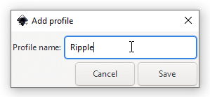
Adding the Ripple profile to Calligraphic Pen
presets.
With the Calligraphic Pen tool, Ripple option active,
trace over the three guides for the ripples. If you don't like what you see,
delete and redraw. Try increasing the mass of the pen. The Calligraphic Pen
tool will react more slowly as you draw, which is the point with this option.
A slower interaction time might help you draw a smoother line or curve.
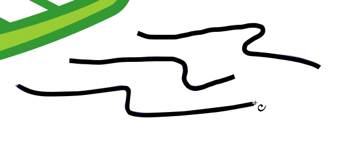
Tracing over the ripple guides.
The fill color of the ripples is black in this example. Change the
color to a light blue by entering bbbbffff into the RGBA text
box in the Fill panel of the Fill and Stroke dialog box.
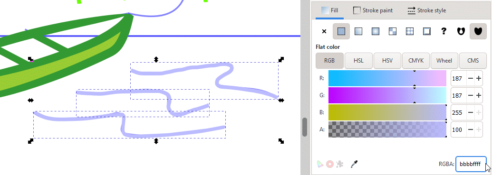
Changing the color of the ripples to a light
blue.
File > Save.
Drawing Rope Using the Pattern Along Path Function
Drawing rope seems to be a simple task of taking a single roll of cord and
duplicating it along the length of a path that represents the rope itself.
To make a length of rope in which all the rolls fit into each other in a
continuous sequence can be tedious, however, requiring an understanding of
symmetry and how to make it work for you. The tedium is reduced when you
break the task down into smaller steps that are easier to manage. The ability
to take a large problem and reduce it into a collection of smaller, simpler
steps is a very important skill to cultivate in graphic design. You can
create very sophisticated and awe-inspiring artwork when you use critical
thinking like this.
You will make a length of doubled rope that is tied to the boat and leads
up to the trunk of the tree. Then, you will make a visually separate length
of rope that circles the trunk of the tree.
First, select the Pen tool () and create a smooth curve that follows the
guideline from the boat to the knot at the tree trunk.
Click on a starting point of the rope guideline and drag the Pen tool
cursor () out in the direction that the curve is to go.
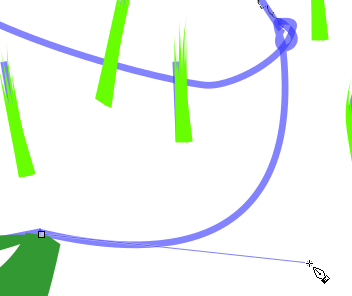
Clicking on a starting point and dragging the direction
handle out in the direction of the curve.
Release the left mouse button and then click on the ending point of
the curve. Note how the curve follows the cursor and is then set when you
click on the ending point.
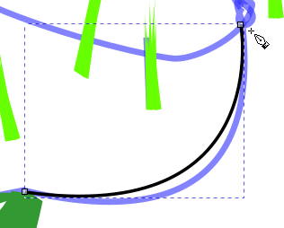
Defining the ending point of the rope curve.
Click on the Node tool (). Position the Node tool cursor over the
rope curve until the hand icon appears. Click-drag the curve out until it
matches the curvature of the guideline underneath. Adjust with the two
direction handles at either end of the curve for fine adjustment, if
necessary.
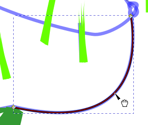
Pulling the rope curve with the Node tool until its shape
matches the guideline underneath.
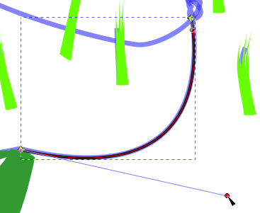
Fine-adjusting the curve using a direction
handle.
You will now transform the rope curve into a path that represents
a doubled rope, that is, a rope path that doubles back on itself smoothly
at each end.
Select the Select tool () and choose Objects > Fill and
Stroke…. Click on the Stroke style tab, enter a Width
of 3.2 px, and click on the Round cap button ().
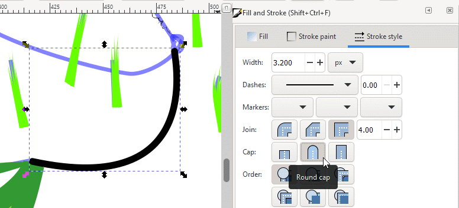
Rope curve with a width of 3.2 pixels and ends having
round caps.
With the curve still selected, choose Path > Stroke to Path.
You will see nothing different in the curve, but Inkscape now
“sees” the curve only as a simple curve without any previous
shape information that it was a line segment.
Select the Node tool () to view the nodes that demarcate the newly
created path from the curve stroke.
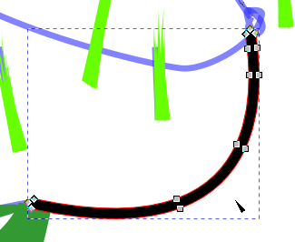
Nodes visible on the newly created path.
To see the path better, change the stroke width to 0.200 px,
set the stroke color to black (<Shift>-click on the black swatch in
the Color palette at the bottom of the working window), and click on the
none swatch () at the left end of the Color palette to set the curve’s fill
color to none (or transparent).
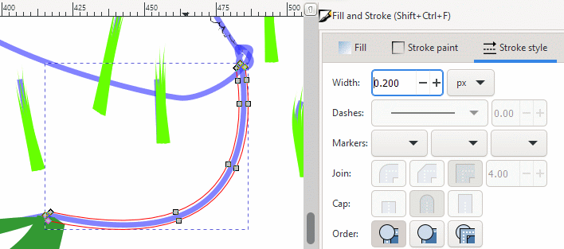
Path seen in Node tool view.
Select the Select tool () if it isn’t active
already, and press <Esc> to deselect the path.
The path doubles back on itself at the ends. The Round cap
option that you selected earlier creates smooth turn-arounds that the coils
that you will shortly make can follow, enhancing the flexible look of
rope.
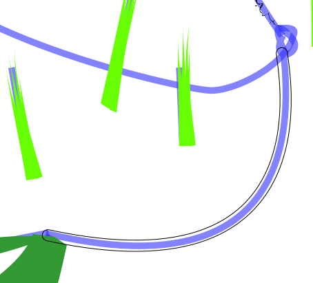
Doubled path with round ends.
Reselect the path with the Select tool ()
and choose Path > Stroke to Path. Do not choose Path >
Object to Path. You will get spurious rope coils that do not appear
right when you apply the Pattern along Path function later in this
tutorial.
The path is now ready to receive the pattern of a rope coil that will be
duplicated along the path’s length.
Drawing Rope — How to Analyze a Complex Shape
The Geometry of Rope
When one thinks of rope, one envisions a cord of any length consisting of
coiled cotton, nylon, wire, or any other material that can make lengths of
strong, usually resilient material. See below.
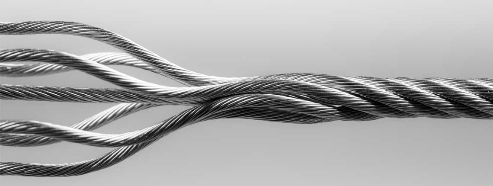
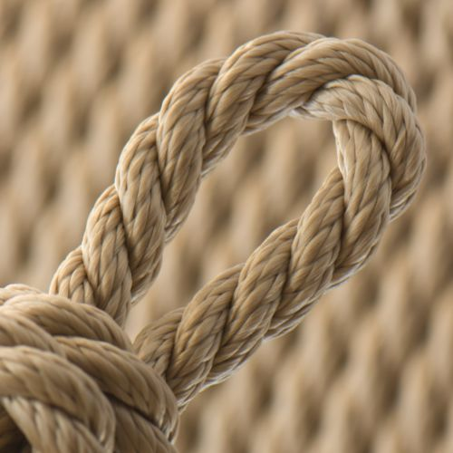
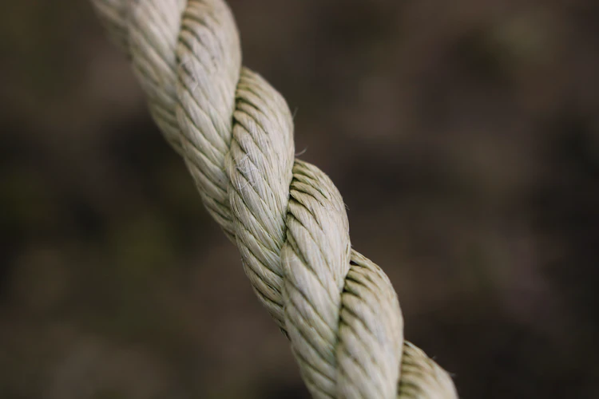
The examples above have one feature in common: they all are made of coiled
material. That basic coil feature, we’ll call it a motif, is
repeated along the length of the rope and informs us, when we see it, that we
are looking at cord or rope. It is our challenge to replicate that coiled look
to inform the person viewing our artwork that he or she is looking at rope or
cord.
Here is where geometry, the study of shapes, comes in handy to inform
our sense of how to do precise design. By the way, this section does not
discuss geometry as is done in a mathematics course. We do need, however, to
look closely at shapes with an analytical frame of mind so that we can create
the kind of imagery that has meaning and makes sense to the viewer.
We’ll start by looking at the drawing of a piece of rope.
Let’s look at a section of rope or cord up close. The
small-scale feature that leaps out of the picture is the coils. These coils
all look exactly alike. As a graphic designer, this repetition of shape
is a geometric constraint, a limit if you will, that will help us immensely.
If you consider one coil, you consider them all.
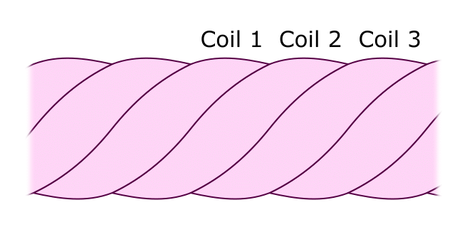
A section of rope.
These coils are not just exact replicas of each other, their sides are
curved just right so that they fit exactly against each other. This is
another constraint that can help us understand how this kind of repetitive
design works.
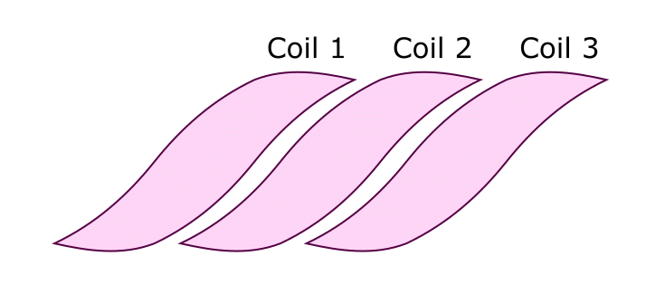
Each coil has matching side curvature.
Another characteristic of the coils is that they still look exactly
alike when they are rotated 180 degrees. This feature is called two-fold
rotational symmetry. Two-fold, three-fold, four-fold, and six-fold
symmetry are terms used in geometry, engineering, crystallography, and
other analytical disciplines that use symmetry as a tool for understanding
and communicating about shapes.
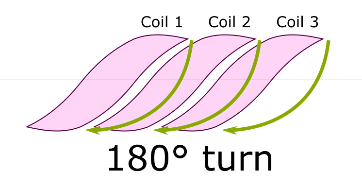
Two-fold rotational symmetry.
Because coils have two-fold rotational symmetry and their sides have
the same curvature, each side has two-fold symmetry across its midpoint.
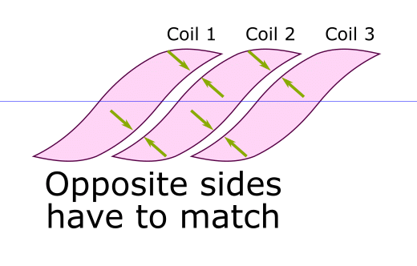
Opposite sides having the same curvature.
As a result, we need to consider only one half of a coil’s
shape.
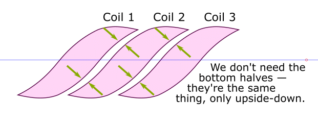
The lower half of the sequence of coils can be
removed with no loss of design information.
With the lower half of the coils removed, we still see the
repetitive symmetry of the upper half, and that opposite sides still
match.
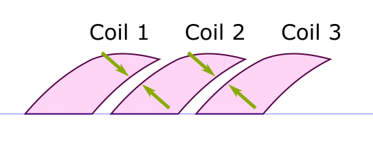
Top half of coils, all important shape information still
present.
The exact sameness of the sides, and the top, of each coil allows us
to divide a coil-half into two complementary halves, as drawn in the figure
below.
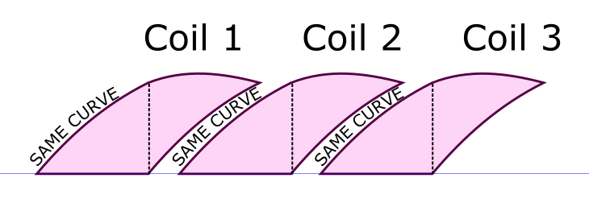
Each coil half divided into two complementary
halves.
When the coil halves are placed next to each other, a simpler
symmetry appears.
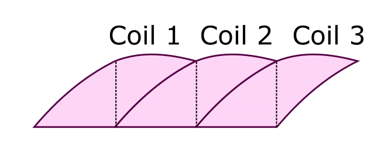
Regrouping coil halves to highlight a simpler
symmetry.
For simplicity’s sake (pun intentional), consider just one
coil half.
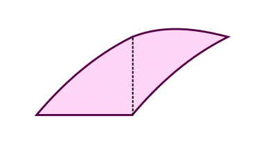
One upper half of a coil.
Move the lower left section of the coil half to the lower right.
Because the two sides have the exact same curvature, they fit together
exactly.
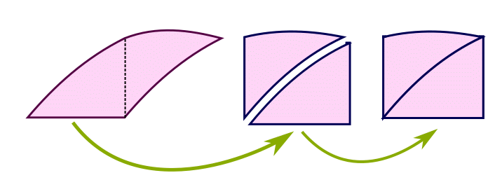
Exact fit of opposing sides.
The two combined sides make the curved diagonal of a rectangle. The
curved top of the rectangle and the curved diagonal can be straightened
out.
Now we can see how, by simplifying a complex shape into basic
components of simpler symmetry, we can understand how the original shape is
put together and, importantly, how we can use Inkscape tools and functions
to construct that shape out of motifs of simple symmetry.
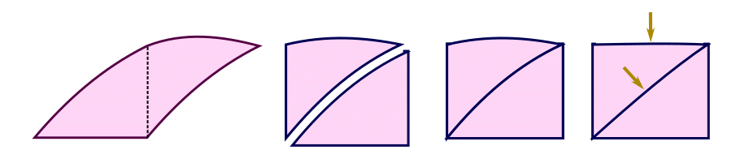
Curved diagonal to straight diagonal.
The simplest two-dimensional shape that ends this train of thought
is the triangle.
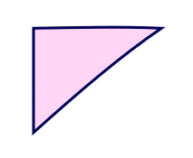
The simplest 2-D shape.
This section can serve as an introduction to the theory of graphic design.
The main point is the importance of critical thinking, which in this case,
helps you to take a complicated problem, like a rope coil, divide it into
smaller, more manageable parts, and use those pieces to understand what is
happening behind the scenes in terms of geometry, symmetry, and what Inkscape
can do for you in drawing them.
If you don’t like mathematics, there is no problem here. You are
working strictly with shapes. Numbers will help when you need them, but for
now, the ability to envision using your mental screen and Inkscape on an
actual screen is what’s important. Then, let the power of your
imagination take over.
Drawing Rope — Using Shape Analysis to Guide Your Drawing
Now that you know what’s involved with doing shape analysis, you will
use your newly acquired insight to draw a length of rope showing visible
coils. This section is a variation on the theme of the last section, the
variation being that you will go through the last section from end to
beginning, using Inkscape to draw each step of the way until you have created
a full length of rope.
The rope starts with a triangle. Draw a triangle using the Pen tool
().
The triangle drawn below has a long leg of 11 pixels’ length and the
short leg is 9 pixels long. These measurements are not hard and fast —
we chose them arbitrarily to make a nice-looking coil, and thus a
nice-looking length of rope.
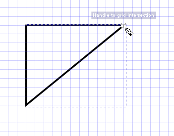
The starting triangle.
The coil will eventually be colored before creating the final length
of rope. At this time, we need a color (we chose Fuchsia here) to see the
triangle and differentiate from the other pieces of the coil shape that
we’ll create shortly. Choose none for the stroke color.
We’ll give the final coil shape a stroke color later.
Fuchsia color fill, no color for the stroke.
Select the Node tool (), and then click on the triangle with the
Node tool cursor (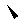). Corner nodes and thin lines appear, ready for
manipulation.
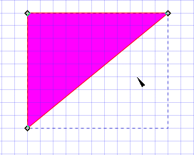
Triangle in Node tool view.
Move the Node tool cursor () to the hypotenuse (the longest leg)
until a hand icon appears next to the cursor. The hand means that the
cursor is now above an object that can be manipulated by the tool.
Click on the hypotenuse to select it and then click-drag it a little to
the upper left to give it a gentle curve. (By how much is up to you.)
This curve will generate both the left and right side curves of the
coil.
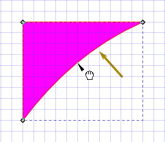
Creating the first curve on the coil motif.
Repeat the previous step with the top (long) leg of the triangle
also, to give it a gentle curve.
This curve will serve as the top and bottom parts of the coil shape,
demarcating where the rope stops and the rest of the artwork begins. Right
now, it just looks like a stylized eagle claw — but not for long!
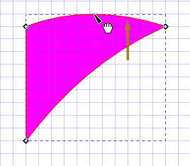
Creating the second curve on the coil motif.
This shape represents one quarter of the full shape of the coil.
Choose the Select tool (). Press <Ctrl>-D to
duplicate the claw shape. Then, click away from the artwork to deselect
it.
If the Snap Tool Bar is not active, then choose View >
Show/Hide. Check the Snap Controls Bar checkbox to activate the
Snap Tool Bar.
Click on the Enable snapping (%), Snap nodes, paths, and
handles, and Snap to cusp nodes, incl. rectangle corners
buttons to activate them.
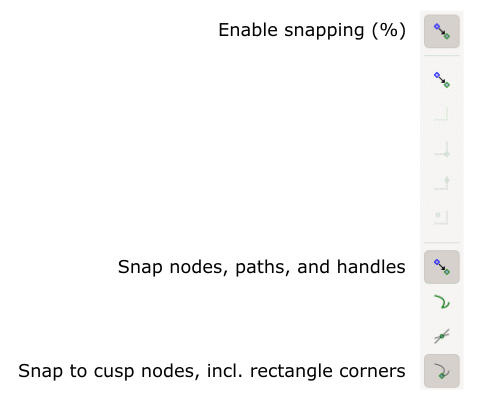
Snap controls bar with selected snapping functions
highlighted.
You will now make the complementary half of the coil shape that will
connect at the left of the “eagle’s talon” shape.
Start by selecting the Rectangle tool ().
Click-drag the Rectangle tool () diagonally across the claw shape
to cover it with a rectangle. Let the top curve remain uncovered. We turned
the View > Page Grid feature off — it is no longer necessary.
We chose blue for the fill color of the rectangle from the Color palette
so that it is distinguishable from the talon shape.
You have created an image stack, consisting of two talon shapes at
the bottom and in the middle, and the rectangle at the top. Consider them
as three pieces of tracing paper, each with an image on it, and in a
bottom-to-top stacking order. You can change that order.
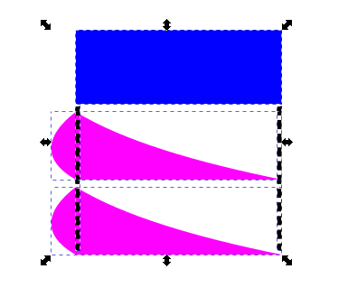
Current image stack.
With the rectangle still selected, click on the Lower selection
one step icon () to move the rectangle to the middle
of the image stack. Note that a talon shape has appeared on top of the
rectangle.
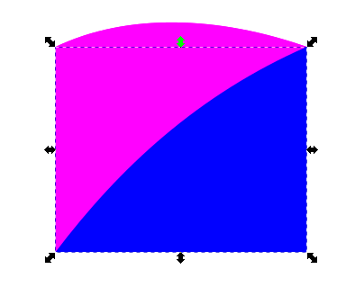
Selecting the rectangle.
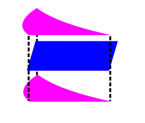
The rectangle lowered by one level in the image
stack.
You will now divide the image stack into two parts: the original
talon shape and the complementary part of the rectangle not
underneath the talon. You will use the Path difference function
to do this.
With the rectangle still selected (reselect it if it has been
deselected), choose Path > Object to Path. This step is necessary for
what’s coming up.
<Shift>-click in the talon shape to group-select it with
the rectangle. You will see two horizontal bounding box line segments: one
demarcating the top of the rectangle, and the other touching the curved
top of the overlying talon shape.
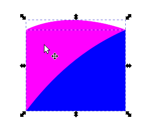
Group-selecting the rectangle and talon
shapes.
The Path difference function operates by taking the top of
two path objects and using it like a cookie-cutter on the shape underneath.
The operation eliminates the cookie-cutter shape but keeps the shape that
was cut.
The Path difference function does not work on regular objects; it
works only on paths. So, before using this function, make sure that
both the cookie-cutter top shape has been converted into a path and the
object underneath has also been converted using Path > Object to Path or
Path > Stroke to Path, depending on the kind of object that needs to be
converted. Then, do your cookie-cutting.
Choose Path > Difference. Click-drag the lower shape away from the
talon. The duplicate talon that cookie-cut the rectangle has been
eliminated, but the original talon at the bottom of the image stack remains.
This technique of duplicating an image and using one as a cookie-cutter is
great for creating shapes that need to complement each other’s
geometry and where you need both shapes available.
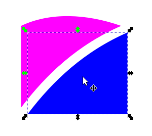
Talon shape and complement, both showing their common
side curve.
Move the lower shape to the left of the talon shape so that it
attaches. Inkscape’s snapping function will pull the talon shape into
position so that it attaches cusp-to-cusp with exact precision.
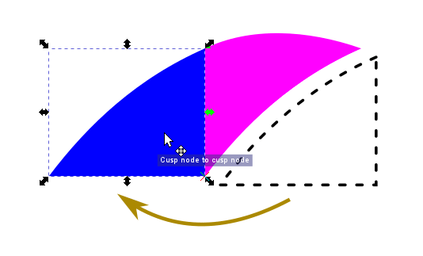
Joining the complementary shape to the left side of the
talon shape.
This shape now represents one half of the full shape of the coil.
With the left-hand shape still selected, <Shift>-click the
talon shape to group-select with the first shape. Press <Ctrl>-G
to group the two shapes. They are now enclosed within one bounding box,
not two.
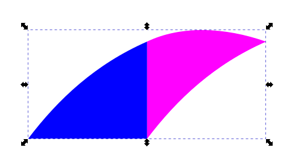
Grouping the two shapes.
With the group still selected, press <Ctrl>-D to duplicate it.
Move the duplicate grouped shape to the side and then click on the Rotate
selection 90° clockwise icon () twice or the Rotate selection 90°
counter-clockwise icon ()
twice to rotate the shape by 180 degrees.
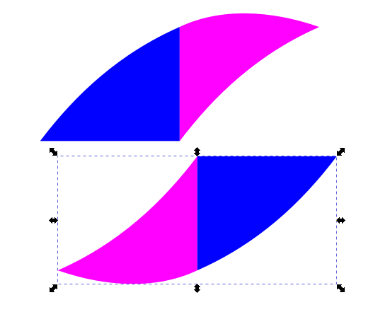
Rotating the duplicate group 180 degrees.
Move the lower rotated duplicated shape so that it fits just right
onto the lower left bottom of the first shape. Inkscape fine-positions the
object for you with the snapping function.
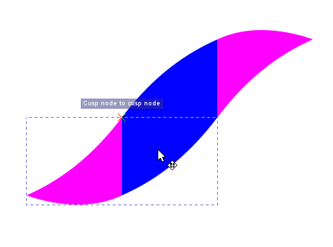
Attaching the lower object to the upper object.
You how have the full shape of the coil.
It is now time to turn it into a single path in preparation for use
in Inkscape’s Pattern Along Path function.
Inkscape “sees” the coil shape as two groupings of
objects, each grouping containing two objects. <Shift>-click on each
group to group-select them and then click on the Ungroup selected
objects button () in the Command Tools
Bar to ungroup them. Each object is now enclosed in its own bounding
box.
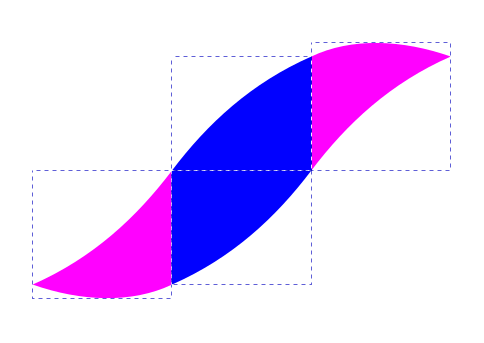
Ungrouping the four objects that make up the coil
shape.
Now is a good time to change the fill color of the four objects.
With the Select tool (), select the upper right object, choose
Object > Fill and Stroke… > Fill tab, and set the
object’s fill color to light blue (bbbbffff in the RGBA
text box).
Giving the top right object a light blue fill
color.
Change the remaining objects’ fill color to light blue.
Start by selecting the next object to the left. Then, select the
Dropper tool (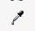) in the toolbox. Position the
Dropper tool cursor () over the light blue object.
Selecting the object to recolor and positioning the
Dropper tool cursor over the light blue object to sample its
fill color.
Click on the light blue object to sample its color. The other
object already selected receives the same light blue fill color.
Clicking on the light blue object to sample its
color.
Repeat the previous two steps for the remaining two objects.
Remaining two objects receiving a light blue fill
color.
You will now convert the four objects that make up the rope coil motif
into paths.
Marquee-select the whole coil shape to group-select the four individual
objects that make it up and choose Path > Object to Path. There is no
visible difference, but Inkscape now “sees” each object only
as a collection of lines and curves.
Converting the four objects into four individual
paths.
Now, you will unite the four individual paths into one. Choose
Path > Union. The four bounding boxes disappear and are replaced by one
large bounding box that encompasses the entire coil motif. Inkscape now
“sees” the coil as one single path. Inkscape’s Pattern
Along Path function can work with this.
Creating a union out of the four individual
paths.
Now is a good time to give the coil motif a border. We chose a dark
blue stroke color. It will demarcate the top and bottom parts of the coil
and serve as a stylized shadowing effect between adjacent coils once the
rope has been made.
Choose Object > Fill and Stroke…, Stroke paint tab, and
type 000066ff into the RGBA text box. Press <Enter> to
set the stroke color.
Select the Stroke style tab and give the border a Width
of 0.150 px.
Dark blue stroke color and stroke width of 0.150
pixels.
Next, resize the coil motif so that it does not interfere with
duplicates located on the path representing the opposite length of rope.
If the motif is too large, tops of one side will overlap the bottoms of
the other side, producing an unrealistic and unsightly effect.
A good technique is to resize the motif using the spacing between
adjacent path curves so that it just fits inside.
With the Select tool (), select the motif, click-drag it so
that it sits over the rope path, and resize it using <Ctrl>-drag on a
sizing handle (<Ctrl>-drag allows you to resize an object and
maintain its aspect ratio so it is not distorted). Resize it so that it
just fits inside the space or is a little smaller. Resizing the motif this
way allows it to be duplicated along the rope path without interfering with
the other motifs on the other side of the path.
Resizing the coil motif.
The coil motif and the rope path will be placed into a image stack
to help the Pattern Along Path function work properly. The coil path
should be topmost as the pattern to be placed ontop of the rope path
underneath, which directs the coil duplicates in their merry march
along the path.
With Select tool (), select the rope path and then click
on the Lower selection to bottom icon () to put the path on the bottom of the image stack.
Select the coil motif with Select tool ()
and then click on the Raise selection to top icon () to put the motif at the top of the image stack.
Putting the rope path and coil motif into an image
stack.
The Pattern along Path function needs to know a few things
about the motif: how wide the bounding box is, by how much do you need to
shift a duplicate so it fits just right against an adjacent motif, and
whether the motif is oriented horizontally or vertically.
The geometry of the motif is such that its central width is one third of
the width of the bounding box. That is how the motif was constructed. You
can find the width of the motif by using the Measure tool.
Click on the Hidden tools arrow ()
at the bottom of the toolbox, and then select Measure.
With the Measure tool cursor (),
click on one side of the motif along its center line (use a guideline if
needed) and then click on the other side. A very nice feature of the
Measure tool is that it can measure the width or height of an object,
as seen in the figure below.
The coil motif has a central width of 1.60 pixels. This is fortuitous
for this tutorial because the Pattern along Path function does not
work with feature resolutions finer than a tenth of a pixel. A width of
1.60 pixels can be reexpressed as 1.6 pixels — the 0 can be
discarded — so this measurement is at the level of resolution that
the Pattern along Path function can work with. Remember this number
of 1.6 pixels.
Note: If your measurement has a number not zero in the last place,
for example, 1.64 px, then resize the motif and remeasure its width
with the Measure tool until you see a width with a 0 in the
last place.
Coil motif width of 1.60 pixels.
It is now time to put the coil motif on the rope path and make the
double-length of rope. Move the coil motif to a side of the rope path.
With the Select tool (), select the coil motif and
<Shift>-click on the rope path to group-select it (the order of
selection is not important).
Now, choose Extensions > Generate from Path > Pattern along
Path….
In the Pattern along Path dialog box, set Copies of the Pattern
= Repeated, stretched, Deformation type = Snake, Space between
copies = 0.0, Normal offset = 0.0, Tangential offset =
0.0, and check the checkbox for Duplicate the pattern before
deformation.
Check the Live preview checkbox to view the first set of
duplicated coil motifs on the rope path. There is space for two more sets
of motifs.
Note: the spacing between individual motifs is determined by the
width of the motif’s bounding box, which is three times the length of
the motifs central width.
Creating the first set of coil motifs along the rope
path.
Click on the Apply button to set the first set of motifs.
There is no visible change in the image, but the Live preview
checkbox unchecks — the Pattern along Path function is ready
for you to create the second set of motifs.
Type 1.6 into the Tangential offset text box. Press
<Enter> to set the value. After a few seconds of calculating behind
the scene, the second set of motifs appear.
Creating the second set of motifs.
The second set of motifs overlap the first set a little bit.
Let’s adjust the spacing by incrementing it by one tenth of a pixel,
to 1.7 pixels. The spacing automatically readjusts after a few
seconds and yields a more pleasing and exacting result. Adjacent coil
motifs are in contact by just the right amount.
Click on the Apply button to set the second set of motifs.
The Live preview checkbox unchecks, and the Pattern Along Path
function awaits the third and final set of motifs.
Fine-adjusting the spacing between the first and second
sets of coil motifs.
There is one last space to fill in order to complete the rope. If
1.7 px produces exact spacing for the first two sets of motifs, then
duplicating and placing the first set by 3.4 pixels (1.7 × 2 =
3.4) should place the third set of motifs just right.
Replace the 1.7 value in the Tangential offset with
3.4 and check the Live preview checkbox. The fit is exact!
Click on the Apply button to set the third set of coils.
Setting the third set of coil motifs.
Note the good fit between adjacent coil motifs. Also, note how the
motifs deform at the strongly curved ends of the rope path.
Another note involves the Duplicate the pattern before
deformation option. When this checkbox is checked, the original
pattern (the first set of coil motifs) remains in place. If the checkbox
is unchecked, that original pattern disappears.
When the artwork is demagnified, many small-scale details in the
rope fade from view — they might be too small to be rendered well,
and so, might simply disappear from view.
Do not delete the coil motif! You will use it again shortly.
Result.
Drawing the Second Rope with the Pattern Along Path Function
Half of the work has already been done for this section: the rope coil
motif has already been made and is just the right size for the rope path you
will create. Inkscape remembers that the motif has the top-of-the-image-stack
marker you gave it in the last section. You just have to make the rope path
and put the coil motif on it via the Pattern Along Path function.
Start drawing the rope path with the Pen tool ().
Starting to draw the rope path.
Using the Node tool (), put in the curves and do the
fine-adjustments you want so that the path looks smooth and
“ropey.”
Increase the path’s width to 3.2 pixels as you had done in the last
section.
Making the rope path smooth and increasing its width to
3.2 pixels.
Select the Choose Path > Stroke to Path. Do not choose Path >
Object to Path. You will see spurious copies of the coil motif when you
use the Pattern Along Path function.
Select the Select tool (). Select the rope path if it has
been deselected, click on the none swatch () in the Color palette so
the path will have no color fill, <Shift>-click on the black swatch
so the stroke path will appear, and set the stroke width to 0.2
px.
Rope path is now a path, not an object; no color fill,
black stroke, 0.2 pixel width.
With the rope path selected, click on the Lower selection to
bottom icon () to put the rope path at the
bottom of the coil motif-rope path image stack.
Making an image stack out of the coil motif and rope
path.
Choose Extensions > Generate from Path > Pattern along
Path…
As you had done in the previous section, set Copies of the Pattern
= Repeated, stretched, Deformation type = Snake, Space between
copies = 0.0, Normal offset = 0.0, Tangential offset =
0.0, and check the checkbox for Duplicate the pattern before
deformation.
Check the Live preview checkbox to view the first set of
duplicated coil motifs on the rope path. Click on the Apply
button to set the first set of duplicate coil motifs.
Applying the first set of coil motifs.
Type 1.7 into the Tangential offset text box. Press
<Enter> to set the value. The second set of coil motifs appear.
Click on the Apply button.
Applying the second set of coil motifs.
Replace the 1.7 value in the Tangential offset with
3.4 and check the Live preview checkbox. Click on the
Apply button to set the third set of coils.
Applying the third set of coil motifs.
Magnify the ends of the newly created rope to see how the coil motifs
are deformed to accommodate themselves to the sharpness of the curves
there.
Examining the left end of the rope path.Examining the right end of the rope path.
When the rope is demagnified, any small discrepancies diminish even
more to the point of disappearing entirely.
The rope demagnified.
Demagnify the artwork so you can see your rope artwork in the context
of the overall poster image.
Partially finished artwork.
You have now finished the second part of this three-part tutorial. You
learned what’s involved with critically thinking through a complex shape,
here, a rope with coils. You deconstructed the rope into individual coils, and
a coil into related shapes that share side curvatures and side lengths. Then,
you reconstructed a couple of rope shapes by retracing the theoretical steps
you took earlier, from end to beginning, to draw a believable rope image,
coils and all.
This kind of critical thinking opens up a whole new arena of understanding
and drawing shapes, with pencil, pen, Inkscape, or another computer drawing
program. You don’t have to be a mathematician — you just need a
basic understanding of how the symmetry of shapes can help you develop a graphic
design version of X-ray vision and help you choose the tools that work best
for you.
In Tutorial 14, Part C, you will learn how to simulate pencil and pen
scribble strokes as if you actually had colored pencils and pens and were just
quickly filling in colors, among a couple of other techniques.
Review Questions
What is the purpose of the Calligraphy tool mass control?
Does the Pattern Along Paths function accept objects, paths, or
both to lay out a pattern along a path?
What does two-fold symmetry mean? What are some examples of two-fold
symmetry?
What might happen if the Tangential offset is lower than the
ideal value for a sequence of Pattern Along Path duplicates?
What is the value of critical thinking in graphic design?
Review Answers
The Pen tool mass control slows down the reaction of the Calligraphy
tool to the rate of speed at which you draw. The higher the mass value, the
more slowly the pen stroke moves behind the Calligraphy tool cursor. This
simulates drawing with a heavy pen, although there is no real weight.
However, wiggles and jiggles caused from small hand movements are reduced,
resulting in a smoother stroke.
The Pattern Along Paths function accepts only paths.
The pattern to be applied to a path has to be converted to a path, by
choosing either Path > Object to Path or Path > Stroke to Path,
depending upon the nature of the pattern. The same thing goes for the path
that the pattern follows.
Two-fold symmetry means that you can take an object, rotate it by
180 degrees about an axis of rotation, and you’ll see the exact same
thing again.
Examples of two-fold symmetry include a rectangle, a diamond shape
◊, the letters H, I, O, S
(non-stylized), X, Z. There is an infinity of other
examples.
If the Tangential offset value is too small, duplicated
objects might overlap, possibly producing an unsightly effect.
Critical thinking is a structured way of looking at a complicated
problem, say, an image, by breaking it down into smaller image chunks that
are easier to understand and work with. In graphic design, these small
pieces of the problem can show you symmetry where it looked like none
existed before. These smaller parts of the problem can help you gain
insight into how you can solve it as you find techniques, here,
Inkscape techniques and tools that can work for you each step along the way
toward a solution.


{kind=link}
{kind=link}
 ) in the toolbox. The Calligraphy Pen Tool Controls Bar
appears.
) in the toolbox. The Calligraphy Pen Tool Controls Bar
appears. ) and create a smooth curve that follows the
guideline from the boat to the knot at the tree trunk.
) and create a smooth curve that follows the
guideline from the boat to the knot at the tree trunk. ) out in the direction that the curve is to go.
) out in the direction that the curve is to go. ). Position the Node tool cursor over the
rope curve until the hand icon appears. Click-drag the curve out until it
matches the curvature of the guideline underneath. Adjust with the two
direction handles at either end of the curve for fine adjustment, if
necessary.
). Position the Node tool cursor over the
rope curve until the hand icon appears. Click-drag the curve out until it
matches the curvature of the guideline underneath. Adjust with the two
direction handles at either end of the curve for fine adjustment, if
necessary. ) and choose Objects > Fill and
Stroke…. Click on the Stroke style tab, enter a Width
of 3.2 px, and click on the Round cap button ().
) and choose Objects > Fill and
Stroke…. Click on the Stroke style tab, enter a Width
of 3.2 px, and click on the Round cap button (). ) at the left end of the Color palette to set the curve’s fill
color to none (or transparent).
) at the left end of the Color palette to set the curve’s fill
color to none (or transparent).
 ) twice or the Rotate selection 90°
counter-clockwise icon (
) twice or the Rotate selection 90°
counter-clockwise icon ( )
twice to rotate the shape by 180 degrees.
)
twice to rotate the shape by 180 degrees. ) in the Command Tools
Bar to ungroup them. Each object is now enclosed in its own bounding
box.
) in the Command Tools
Bar to ungroup them. Each object is now enclosed in its own bounding
box.

 ) to put the path on the bottom of the image stack.
) to put the path on the bottom of the image stack. )
at the bottom of the toolbox, and then select Measure.
)
at the bottom of the toolbox, and then select Measure.